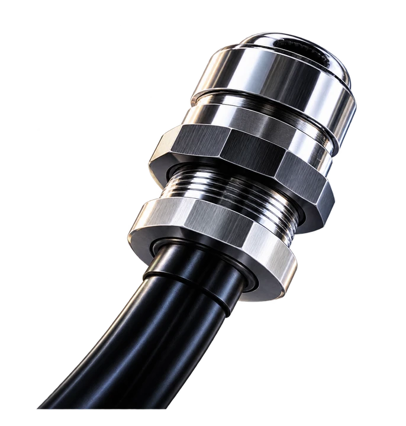

空間を読み込み中
SCROLL TO THE MOON
つながる先に、
JAPAN AVC / A JOURNEY OF CONNECTION
見えないところで、未来を守る。
To Protect What Matters
水、粉塵、熱。過酷な環境から、接続を守る。
その小さな技術が、世界の大きな可能性を支えている。
いっしょに、月の向こうへ。
いっしょに来てくれて、ありがとう。
小さなつながりが、世界を支えているんだ。
クリック・タップでつなぐ / 長押しで光を広げる
人と技術接続と保護今日と未来
見えないところで、社会を支える。
ONE CONNECTION BECOMES MANY.

CABLE GLAND / 製品のブランドイメージぴったりの「つなぐ」を探そう。


04 / APPLICATION CONCEPT
つながる先に、
社会が動く。
使われる場所が変わると、
守るべき条件も変わる。
用途を選んで、必要な条件へ。
01 / INDUSTRY止まらない日常を、
止まらない日常を、
足元から。
機械とケーブルの接続部を、取付と保守の視点から考える。
用途検討のコンセプトです。採用実績・用途への適合性を示すものではありません。
こんなところでも、つながっているよ。
ここから、次のつながりへ。
TO PROTECT WHAT MATTERS.